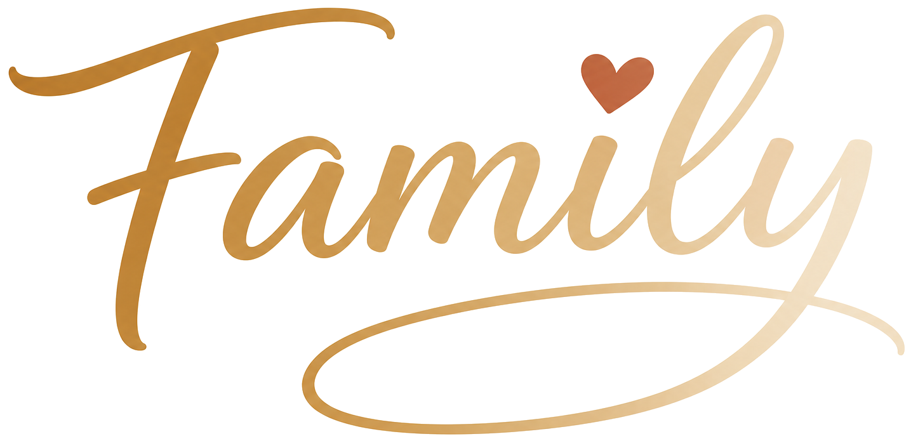

יום חמישי, 24 באפריל
משפחת לוי
היום
6 אירועים
מזג האוויר
22°
מעונן חלקית
ביחד היום
2/4
בני בית זמינים
המשימות להיום
הצג הכל
10:00
חוג כדורגל של יונתן
13:30
פגישה עם המורה של נועה
17:00
סופר יחד
19:30
ערב סרט משפחתי